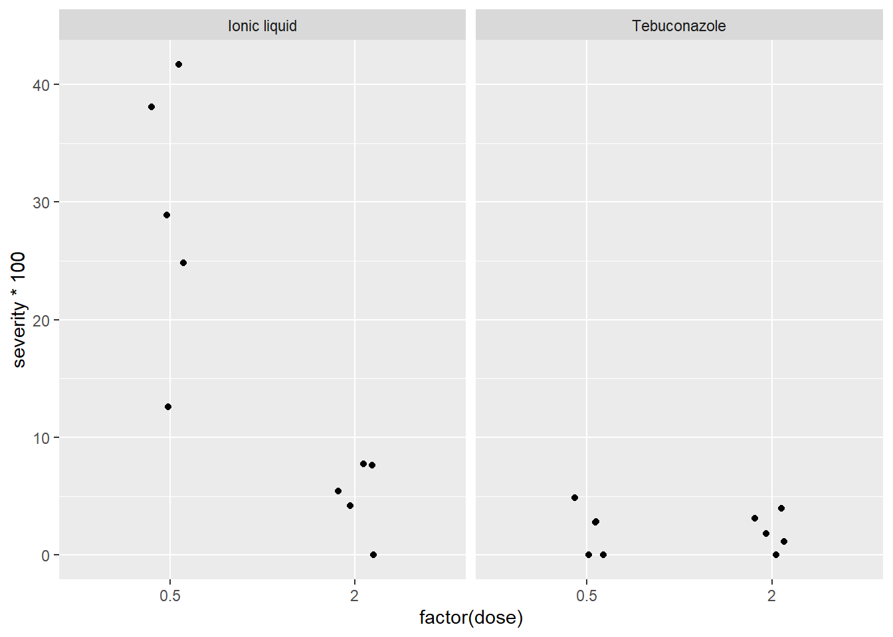
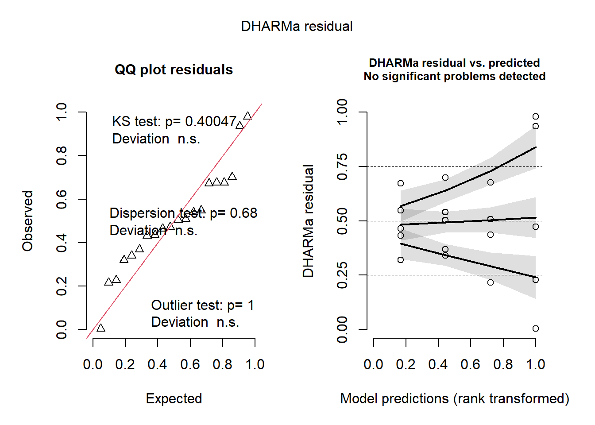
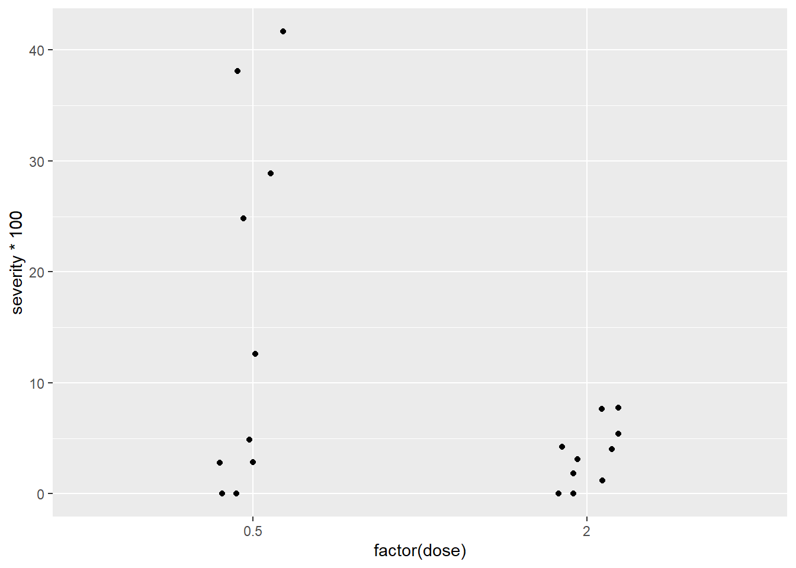
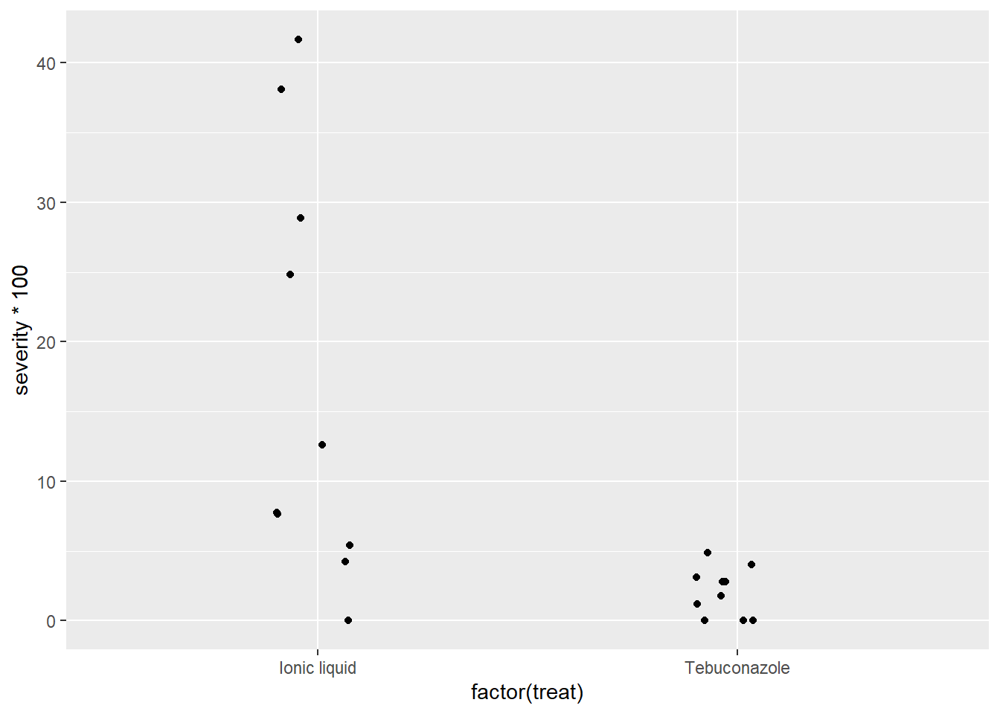
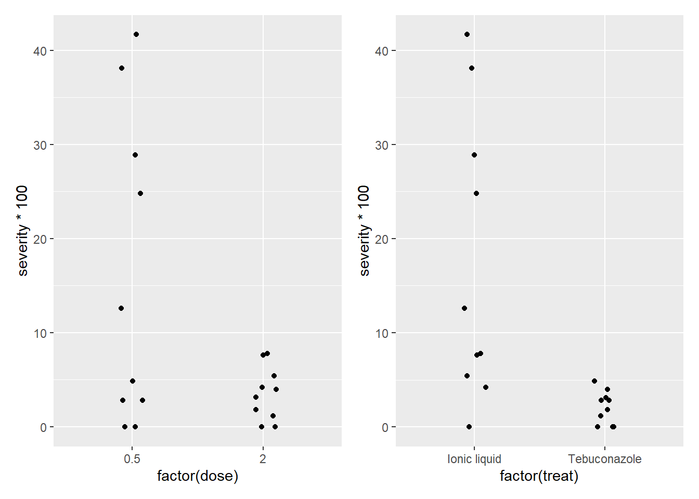
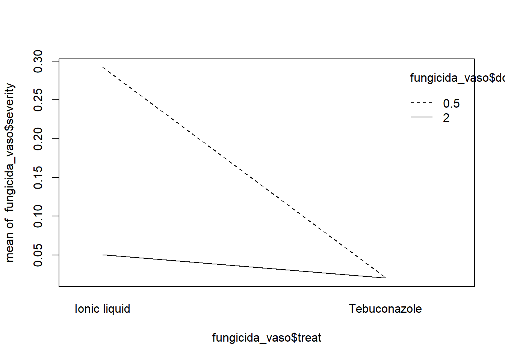

Code
#Neste exemplo, vamos testar se a resposta depende do tratamento e da dose. Lembrando que este conjunto de dados pertence a planilha dados diversos disponibilizada em aula pelo professor.
library(gsheet)
fungicida_vaso <- gsheet2tbl("https://docs.google.com/spreadsheets/d/1bq2N19DcZdtax2fQW9OHSGMR0X2__Z9T/edit?gid=2023059672#gid=2023059672")
fungicida_vaso# A tibble: 20 × 8
treat dose rep n_sp dis_sp n_seeds inf_seeds severity
<chr> <dbl> <dbl> <dbl> <dbl> <dbl> <dbl> <dbl>
1 Ionic liquid 0.5 1 103 13 25 10 0.126
2 Ionic liquid 0.5 2 125 31 25 12 0.248
3 Ionic liquid 0.5 3 210 80 25 12 0.381
4 Ionic liquid 0.5 4 97 28 25 10 0.289
5 Ionic liquid 0.5 5 180 75 25 11 0.417
6 Ionic liquid 2 2 116 9 25 6 0.0776
7 Ionic liquid 2 3 166 7 25 3 0.0422
8 Ionic liquid 2 4 157 12 25 1 0.0764
9 Ionic liquid 2 5 129 7 25 7 0.0543
10 Ionic liquid 2 1 84 0 25 1 0
11 Tebuconazole 0.5 1 121 0 25 2 0
12 Tebuconazole 0.5 2 123 6 25 5 0.0488
13 Tebuconazole 0.5 3 107 3 25 1 0.0280
14 Tebuconazole 0.5 4 90 0 25 2 0
15 Tebuconazole 0.5 5 142 4 25 1 0.0282
16 Tebuconazole 2 1 166 3 25 5 0.0181
17 Tebuconazole 2 2 120 0 25 2 0
18 Tebuconazole 2 3 100 4 25 2 0.04
19 Tebuconazole 2 4 96 3 25 0 0.0312
20 Tebuconazole 2 5 170 2 25 4 0.0118Code
#Plotar o gráfico para análise visual dos dados
library(ggplot2)
fungicida_vaso |>
ggplot(aes(factor(dose), severity*100))+ #usamos factor para transformar dose em fator
geom_jitter(width = 0.1)+
facet_wrap(~treat)
Code
#Testar se o efeito do tratamento depende da dose.
m_anti <- lm(severity ~ treat*dose, data = fungicida_vaso)
anova(m_anti)Analysis of Variance Table
Response: severity
Df Sum Sq Mean Sq F value Pr(>F)
treat 1 0.113232 0.113232 30.358 4.754e-05 ***
dose 1 0.073683 0.073683 19.755 0.0004077 ***
treat:dose 1 0.072739 0.072739 19.502 0.0004326 ***
Residuals 16 0.059678 0.003730
---
Signif. codes: 0 '***' 0.001 '**' 0.01 '*' 0.05 '.' 0.1 ' ' 1Code
#como deu siguinificativo as interações entre dose e tratamento, decompoe as médias dentro de cada tratamento e dose (trat x dose). Desconsidera os efeitos simples e foca na interação.
#testar se o modelo esta atende aos pressupostos de normalidade e homogeneidade, usando o DHARMa
library(DHARMa)
plot(simulateResiduals(m_anti))
Code
#como não há problemas, pode seguir com o teste de comparação de médias
#comando para decompor as médias dos tratamentos dentro das doses.
library(emmeans)
media_anti <- emmeans(m_anti, ~ treat |dose)
media_anti #mostra as médias (no artigo, apresentar em tabela)dose = 0.5:
treat emmean SE df lower.CL upper.CL
Ionic liquid 0.2921 0.0273 16 0.23420 0.3500
Tebuconazole 0.0210 0.0273 16 -0.03690 0.0789
dose = 2.0:
treat emmean SE df lower.CL upper.CL
Ionic liquid 0.0501 0.0273 16 -0.00781 0.1080
Tebuconazole 0.0202 0.0273 16 -0.03768 0.0781
Confidence level used: 0.95 Code
library(multcomp)
cld(media_anti) #mostrar as diferenças estatísticas para letras das colunas (maiusculas). dose = 0.5:
treat emmean SE df lower.CL upper.CL .group
Tebuconazole 0.0210 0.0273 16 -0.03690 0.0789 1
Ionic liquid 0.2921 0.0273 16 0.23420 0.3500 2
dose = 2.0:
treat emmean SE df lower.CL upper.CL .group
Tebuconazole 0.0202 0.0273 16 -0.03768 0.0781 1
Ionic liquid 0.0501 0.0273 16 -0.00781 0.1080 1
Confidence level used: 0.95
significance level used: alpha = 0.05
NOTE: If two or more means share the same grouping symbol,
then we cannot show them to be different.
But we also did not show them to be the same. Code
#decompões as médias de cada dose dentro dos tratamentos.
#mostrar as diferenças estatísticas para letras na linha (minusculas).
media_anti <- emmeans(m_anti, ~ dose |treat)
media_antitreat = Ionic liquid:
dose emmean SE df lower.CL upper.CL
0.5 0.2921 0.0273 16 0.23420 0.3500
2.0 0.0501 0.0273 16 -0.00781 0.1080
treat = Tebuconazole:
dose emmean SE df lower.CL upper.CL
0.5 0.0210 0.0273 16 -0.03690 0.0789
2.0 0.0202 0.0273 16 -0.03768 0.0781
Confidence level used: 0.95 Code
cld(media_anti)treat = Ionic liquid:
dose emmean SE df lower.CL upper.CL .group
2.0 0.0501 0.0273 16 -0.00781 0.1080 1
0.5 0.2921 0.0273 16 0.23420 0.3500 2
treat = Tebuconazole:
dose emmean SE df lower.CL upper.CL .group
2.0 0.0202 0.0273 16 -0.03768 0.0781 1
0.5 0.0210 0.0273 16 -0.03690 0.0789 1
Confidence level used: 0.95
significance level used: alpha = 0.05
NOTE: If two or more means share the same grouping symbol,
then we cannot show them to be different.
But we also did not show them to be the same. Code
#para o CV (coeficiente de variação do modelo) da tabela
library(agricolae)
cv.model(m_anti)[1] 63.7165Code
#caso não tivesse inyteração, se fosse não siguinificativo, observar os efeitos simples
p1 <- fungicida_vaso |>
ggplot(aes(factor(dose),severity*100))+
geom_jitter(width =0.1)
p1
Code
p2 <- fungicida_vaso |>
ggplot(aes(factor(treat),severity*100))+
geom_jitter(width =0.1)
p2 
Code
#Unindo os dois gráficos para comparação
library(patchwork)
p1+p2
Code
#função auxiliar para visualizar se a interação é siguinificativa ou não
interaction.plot(fungicida_vaso$treat, fungicida_vaso$dose, fungicida_vaso$severity, data = fungicida_vaso)
Code
#quando as linhas não são paralelas quer dizer que a interação é siguinificativa e quando são paralelas, interação não siguinificativa